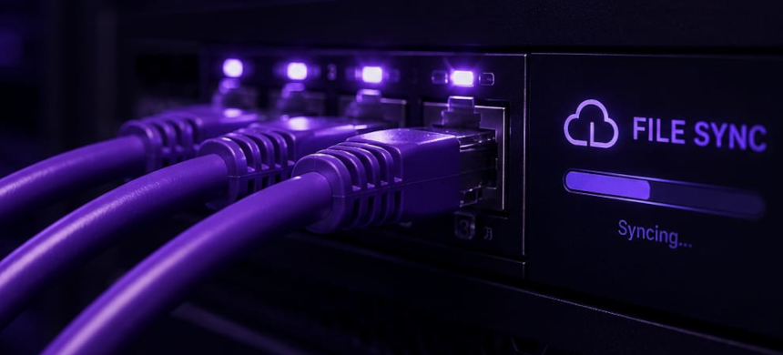

Keeping client software current without disruption.
An on-premises maintenance process in development, designed to test and deploy updates under client-specific conditions, protect existing information, and support reliable operation.
Discuss reliable maintenance
AI-generated illustration.
In development · Project timeline: Nov 2023 – Dec 2026
Good software also needs a dependable life after launch.
Client applications change over time: improvements need to be delivered, problems investigated, and important information protected. Asking clients to move files manually or guide every maintenance step creates interruptions and risks errors to become problems, before they have even been discovered.
The goal is a repeatable way to observe the performance of client installations in real time and apply updates quickly and safely, without requiring constant client intervention.
Testing and deploying updates in the client's environment.
I am developing an on-premises CI/CD pipeline with quality gates and an isolated runtime environment. It is intended to run production-like tests under the hardware and system conditions of the client's host, including automated end-to-end testing before an update is applied. Automated deployments aim to reduce manual intervention and make the update process more consistent.
Checking readiness at startup.
As part of application initialization, connectivity, dependency, and health checks are intended to verify that the application and its required services are ready to operate. Together with the pipeline's quality gates and remote monitoring, these checks aim to support reliable operation beyond deployment.
Working towards remote monitoring and maintenance.
I am developing a tool to synchronise logging data to secured web storage, enabling remote monitoring of client installations and the creation of patches when necessary. The goal is to apply updates remotely without requiring the client to perform manual steps.
The safety net for client data.
The planned update process backs up the client's data locally before applying changes. This is intended to support data restoration if an update fails or causes issues.
Less disruption for clients and better long-term ownership.
The system aims to make routine maintenance more consistent, with fewer manual hand-offs and better preparation for recovery. Clients should receive updates with less interruption, while support can begin with useful information rather than guesswork.
For recruiters and prospective clients, this project shows that I think beyond launch day. I build for continued operation, responsible support, and the trust that develops when software remains maintainable.